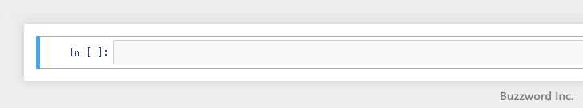
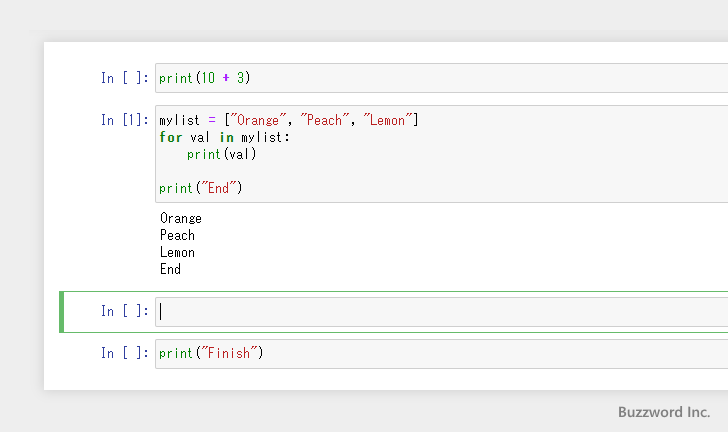
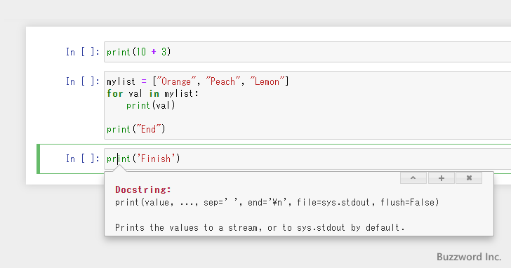

Jupyter Notebookの基本操作とショートカットキー
Jupyter Notebook で作成したノートブックにおける基本操作方法および利用できるショートカットキーについて解説します。
目次
コマンドモードとエディットモードを切り替える
ノートブックで表示されているセルは、コマンドモードとエディットモードの 2 つのモードがあります。
コマンドモードはショートカットキーを使用してセルを追加したり削除したりといったセルに対する操作を行う場合に使用するモードです。セルの左側に青の線が表示されているときはコマンドモードです。

エディットモードはセルにプログラムを入力する場合に使用するモードです。セルの左側に緑の線が表示されているときはエディットモードです。
コマンドモードとエディットモードの切り替えは次のショートカットキーを使用します。
Enter コマンドモードからエディットモードへ切り替える Esc エディットモードからコマンドモードへ切り替える
なおマウスを使って切り替える場合、テキストボックスの部分をクリックするとエディットモードになり、テキストボックスの左側部分をクリックするとコマンドモードになります。
セルを追加する
セルの追加を行うにはコマンドモードで次のようにショートカットキーを押してください。
A 現在のセルの上にセルを追加 B 現在のセルの下にセルを追加
次の状態から B キーを押すと、すぐ下にセルが追加されフォーカスが追加されたセルに移動します。
次の状態から A キーを押すと、すぐ上にセルが追加されフォーカスが追加されたセルに移動します。
なおメニューからセルの追加を行うには「Insert」メニューをクリックしてください。表示されたメニューの中から「Insert Cell Above」をクリックすると現在のセルのすぐ上にセルが追加され、「Insert Cell Below」をクリックすると現在のセルのすぐ下にセルが追加されます。

セルを削除する
セルの削除を行うにはコマンドモードで次のようにショートカットキーを押してください。D キーを 2 回連続で押します。
D D 現在のセルを削除する
次の状態から D D キーを押すと、現在のセルが削除されます。

なおメニューからセルの削除を行うには、「Edit」メニューをクリックし表示されたメニューの中から「Delete Cells」をクリックしてください。
CodeセルとMarkdownセルを切り替える
セルにはプログラムのコードだけではなくテキストを入力することができます。プログラムを入力するためのセルを Code セル、テキストを表示するためのセルを Markdown セルと呼びます。( Markdown セルを使ったテキストの入力については「Markdownセルを使ってテキストを表示する」を参照されてください)。
Code セルと Markdown セルの切り替えはコマンドモードで次のショートカットキーを使用します。
Y Codeセルにする M Markdownセルにする
Code セルの状態から M キーを押すと Markdown セルに代わります。逆に Markdown セルの状態から Y キーを押すと Code セルに代わります。
なおメニューから Code セルと Markdown セルの切り替えを行うには、「Cell」メニューをクリックし、表示されたメニューの中から「Cell Type」をクリックしてください。セルのタイプを選択することができます。
セルのカット、コピー、ペースト
セルのカット、コピー、ペーストを行うにはコマンドモードで次のようにショートカットキーを押してください。
X 現在のセルをカットする C 現在のセルをコピーする V 現在のセルの下にコピーしたセルを貼り付ける
次の状態から C キーを押すと、現在のセルがコピーされます。(コピーを行っても画面上は変化がありません)。
さらに V キーを押すと、現在のセルの下にコピーしたセルが貼り付けられます。
次の状態から X キーを押すと、現在のセルがカットされます。
さらに V キーを押すと、現在のセルの下にカットしたセルが貼り付けられます。
なおメニューからセルのカット、コピー、ペーストを行うには、「Edit」メニューをクリックし、表示されたメニューの中からそれぞれ「Cut Cells」「Copy Cells」「Paste Cells Below」をクリックしてください。
行番号を表示する
セルに入力されたプログラムに対して行番号を表示するにはコマンドモードで次のようにショートカットキーを押してください。
L 現在のセルに行番号を表示する Shift + L すべてのセルに行番号を表示する
次の状態から L キーを押すと、現在のセルに行番号が表示されます。
次の状態から Shift ＋ L キーを押すと、すべてのセルに行番号が表示されます。

なおメニューから行番号の表示を行うには、「View」メニューをクリックし表示されたメニューの中から「Toggle Line Numbers」をクリックしてください。
セルをマージしてひとつにまとめる
複数のセルをマージして一つのセルにまとめるにはコマンドモードで次のようにショートカットキーを押してください。
Shift + M 選択している複数のセルをマージする
次の状態から Shift + M キーを押すと、選択しているセルがマージされます。
一つのセルだけが選択された状態で Shift + M キーを押すと、一つ下のセルとマージされます。
なおメニューからセルのマージを行うには、「Edit」メニューをクリックし表示されたメニューの中から「Merge Cell Above」または「Merge Cell Below」をクリックしてください。
セルを分割する
セルをカーソルの位置で分割して 2 つのセルに分けるにはエディットモードで次のようにショートカットキーを押してください。
Ctrl + Shift + Minus セルを分割する
次の位置にカーソルがある状態から Ctrl + Shift + Minus キーを押すと、選択しているセルがカーソルの位置で二つに分割されます。
なおメニューからセルの分割を行うには、「Edit」メニューをクリックし表示されたメニューの中から「Split Cell」をクリックしてください。
プログラムを実行する
選択しているセルに入力されたプログラムを実行するにはコマンドモードまたはエディットモードで次のようにショートカットキーを押してください。
Shift + Enter プログラムを実行し下のセルを選択する Ctrl + Enter プログラムを実行する Alt + Enter プログラムを実行し下にセルを挿入する
次の状態から Shift + Enter キーを押すと、選択されているセルに入力されたプログラムが実行されて、下にあるセルが選択されます。
なお下にセルが存在しなかった場合は、新しいセルを追加した上で選択します。
次の状態から Ctrl + Enter キーを押すと、選択されているセルに入力されたプログラムが実行されます。選択されているセルはそのままです。

次の状態から Alt + Enter キーを押すと、選択されているセルに入力されたプログラムが実行されて、下に新しいセルが追加されます。

なおメニューからプログラムの実行を行うには、「Cell」メニューをクリックし、表示されたメニューの中からそれぞれ「Run Cells and Select Below」「Run Cells」「Run Cells and Insert Below」をクリックしてください。
ノートブックの上書き保存とチェックポイントの作成
現在のノートブックを上書き保存しチェックポイントを作成するにはコマンドモードまたはエディットモードで次のようにショートカットキーを押してください。
S プログラムを上書き保存しチェックポイントを作成する Ctrl + S プログラムを上書き保存しチェックポイントを作成する
※ S キーだけを押した場合と、 Ctrl + S キーを押した場合はまったく同じ動作をします。なおエディットモードでは Ctrl + S キーを使ってください。
※ チェックポイントを作成するとあとからチェックポイントを作成した時点での状態に戻すことができます。チェックポイントはノートブック毎に 1 つなので、新しいチェックポイントを作成すると上書きされます。
次の状態から S キーを押すと、ノートブックが上書き保存され、チェックポイントが作成されます。
あとから作成したチェックポイントの状態に戻すには、「File」メニューの中にある「Revert to Checkpoint」をクリックし、右側に表示されたチェックポイントの作成日時をクリックします。
なおメニューからノートブックの上書き保存とチェックポイントの作成を行うには、「Fill」メニューをクリックし表示されたメニューの中から「Save and Checkpoint」をクリックしてください。
エディットモードで使用できるショートカットキー
エディットモードで使用できる便利なショートカットキーをいくつかご紹介します。
Tab コードを補完する Shift + Tab Python構文の説明を表示する Ctrl + ] インデントを増やす Ctrl + [ インデントを減らす Ctrl + / 現在の行をコメントにする
セルにコードの一部を入力した状態で Tab キーを押すと、コードの補完が行われます。
セルに入力したコードにカーソルがある状態で Shift + Tab キーを押すと、カーソルがある位置の構文の説明が表示されます。

セルに入力したコードにカーソルがある状態で Ctrl + ] キーを押すと、カーソルがある行のインデントが増えます。
セルに入力したコードにカーソルがある状態で Ctrl + [ キーを押すと、カーソルがある行のインデントが減ります。
セルに入力したコードにカーソルがある状態で Ctrl + / キーを押すと、カーソルがある行がコメントになります(行の先頭に '#' が付きます)。
ショートカットキーの一覧を表示する
コマンドモードおよびエディットモードで利用可能なショートカットキーの一覧を表示するには、コマンドモードで次のようにショートカットキーを押してください。
H ショートカットキーの一覧を表示する
次のように表示されます。
-- --
Jupyter Notebook で作成したノートブックにおける基本操作方法および利用できるショートカットキーについて解説しました。
( Written by Tatsuo Ikura )

著者 / TATSUO IKURA
初心者～中級者の方を対象としたプログラミング方法や開発環境の構築の解説を行うサイトの運営を行っています。